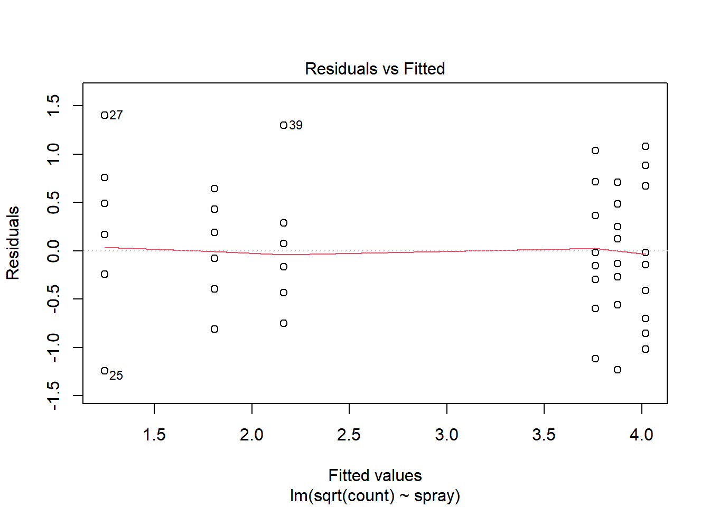
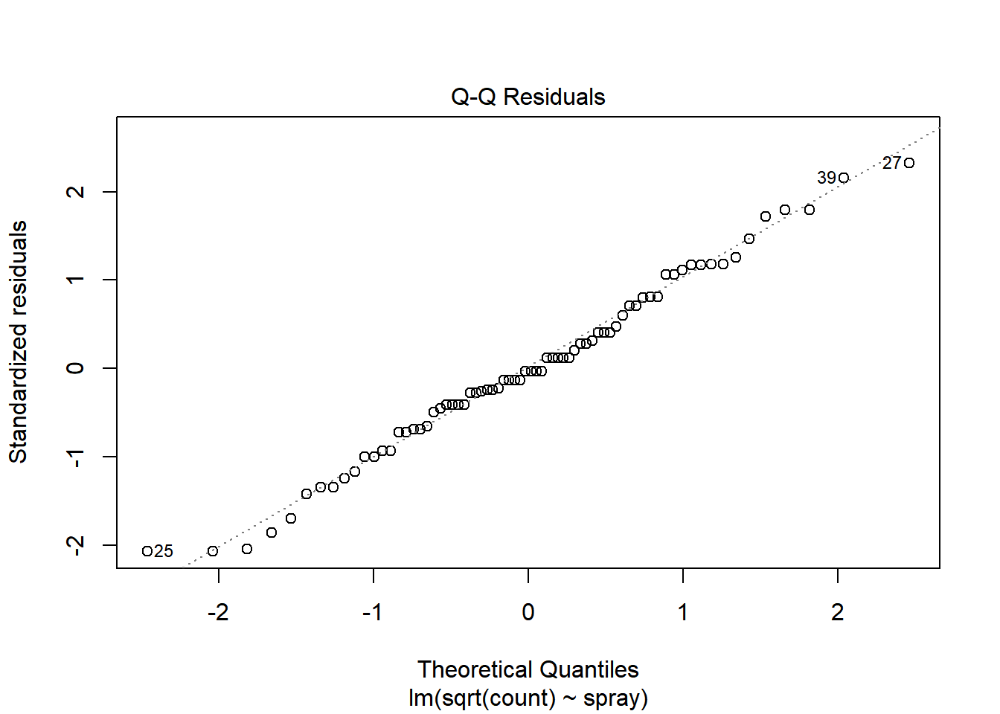
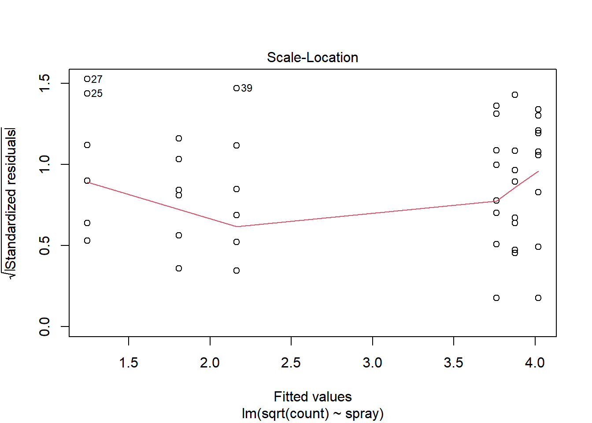
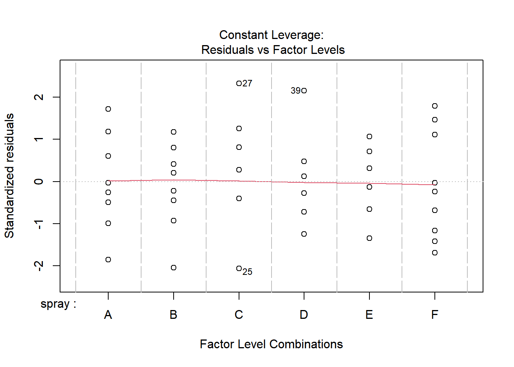
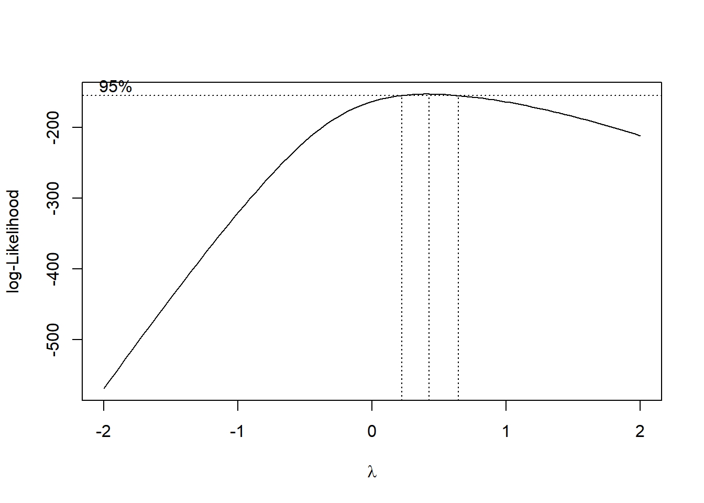
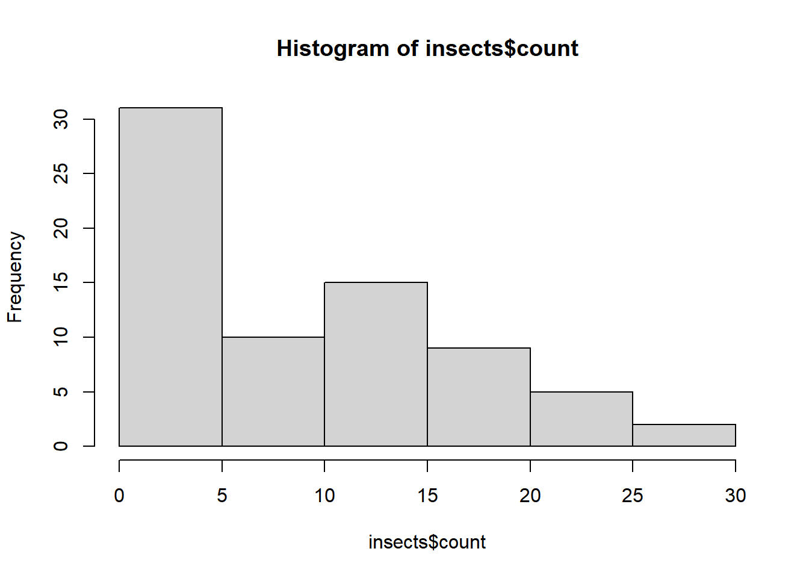
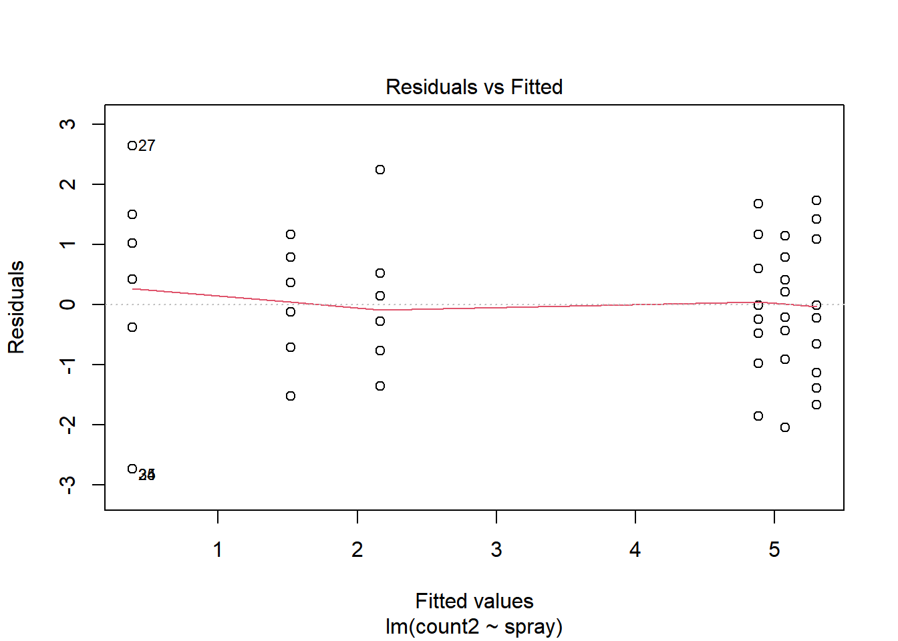
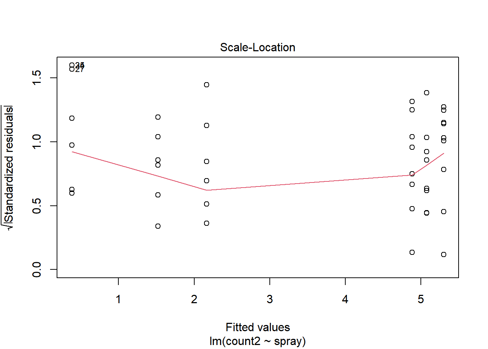
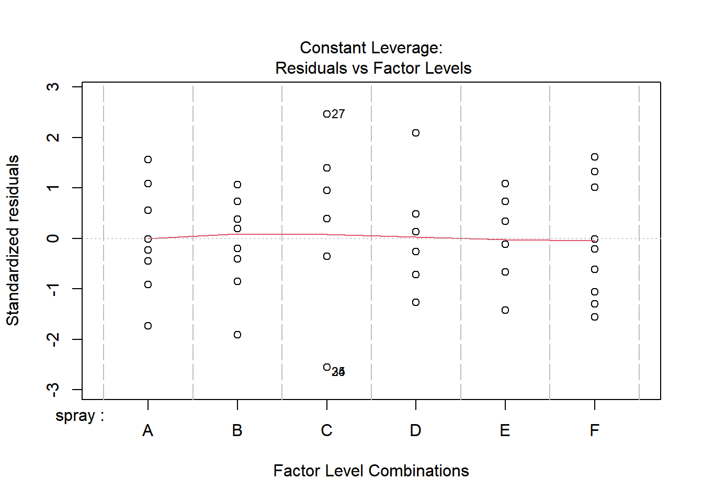

library(MASS)
library(DHARMa)This is DHARMa 0.4.7. For overview type '?DHARMa'. For recent changes, type news(package = 'DHARMa')library(tidyverse)── Attaching core tidyverse packages ──────────────────────── tidyverse 2.0.0 ──
✔ dplyr 1.1.4 ✔ readr 2.1.5
✔ forcats 1.0.0 ✔ stringr 1.5.1
✔ ggplot2 3.5.2 ✔ tibble 3.2.1
✔ lubridate 1.9.4 ✔ tidyr 1.3.1
✔ purrr 1.0.4 ── Conflicts ────────────────────────────────────────── tidyverse_conflicts() ──
✖ dplyr::filter() masks stats::filter()
✖ dplyr::lag() masks stats::lag()
✖ dplyr::select() masks MASS::select()
ℹ Use the conflicted package (<http://conflicted.r-lib.org/>) to force all conflicts to become errorslibrary(agricolae)
insects <- InsectSprays
m1 <- lm(sqrt(count) ~ spray, data = insects)
plot(m1)



b <- boxcox(lm(count + 0.1 ~ 1, data = insects))
lambda <- b$x[which.max(b$y)]
lambda[1] 0.4242424insects <- insects |>
mutate(count2 = (count^lambda - 1) / lambda,
count3 = sqrt(count))
hist(insects$count)
m2 <- lm(count2 ~ spray, data = insects)
plot(m2)


